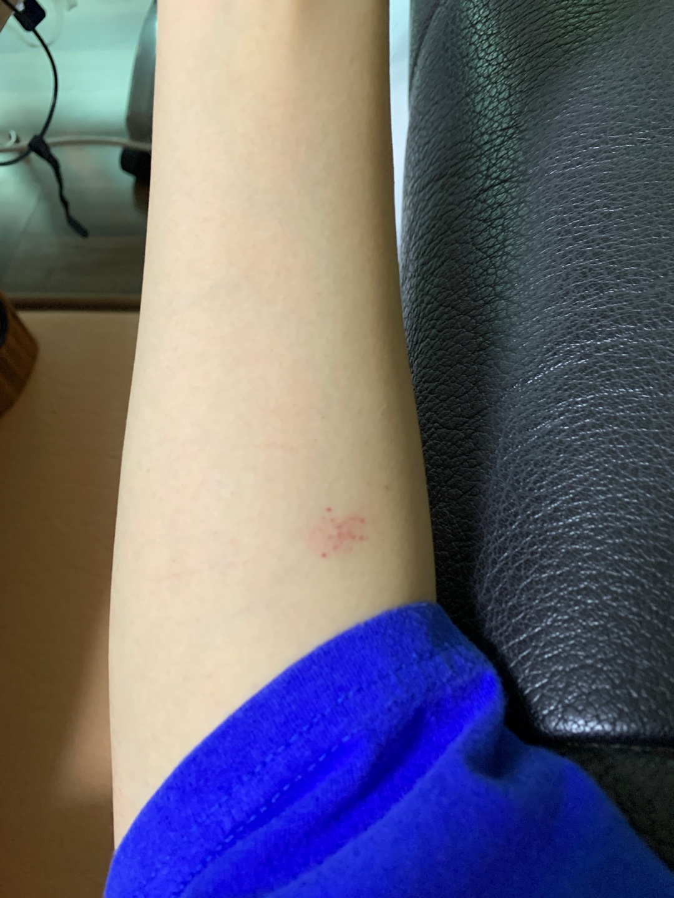
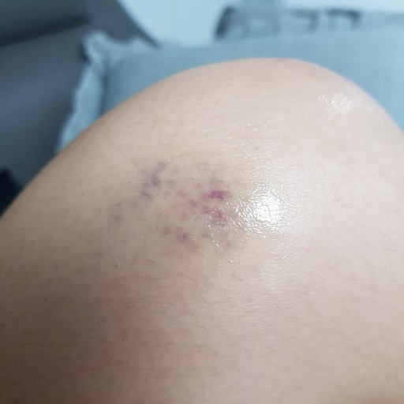

2021년 9월 11일 17시26분 경 인천 연수구에 거주하는 시연 둘리 조(만25세)양의 왼쪽 전완 부근에 다수의 붉은 점과 주변의 홍조가 나타나것으로 발견되었고 조양은 이를 발견 직후 사진을 촬영하여 그녀와 교제 관계에 있는 언니(만 27세)에게 카카오톡을 통해 전달하였다.
이에 깜짝 놀란 언니씨는 즉각 네이버에 '피부 붉은멍'의 검색어로 검색하였고 그곳에서 비슷한 사진을 찾을 수 있었다.

위 사진은 조양이 호소하였던 증상과 상당부분 비슷한 것으로 발견되었고 조양의 피부에 발견된 붉은 반점과 그 주변의 홍조는 멍으로 추측된다. 이에 조양은 어딘가에 찝힌 기억이 있는 것 같다는 사실을 토로하였고 걱정된 언니는 시연둘리조에게 비판텐 을바를 것을 당부하여 사건은 일단락 되었다.